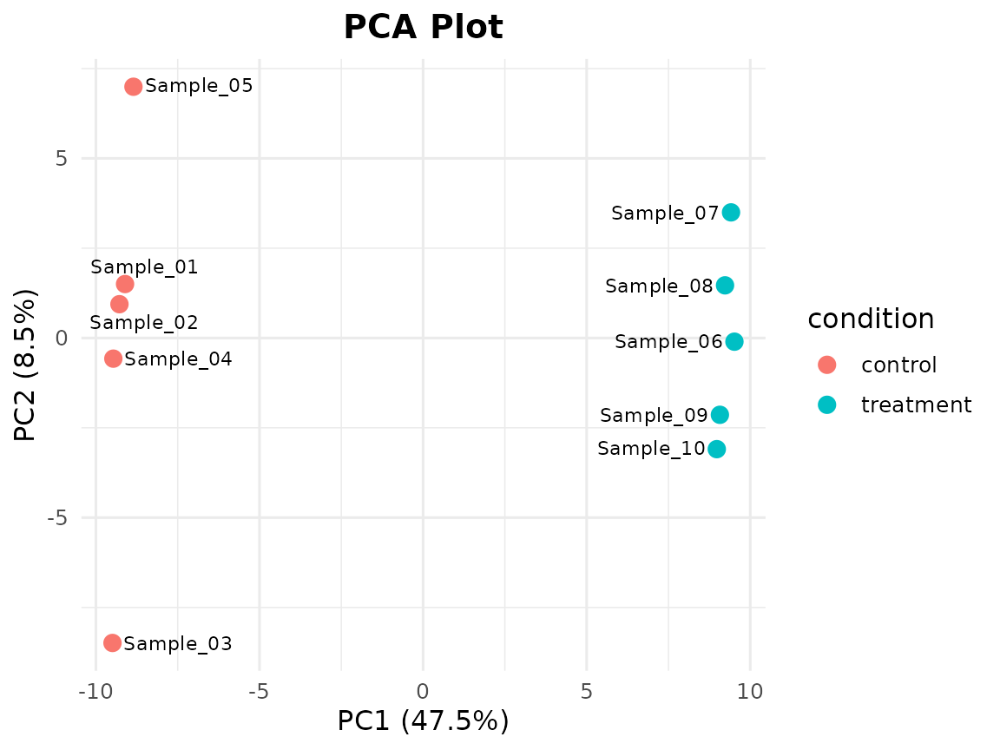
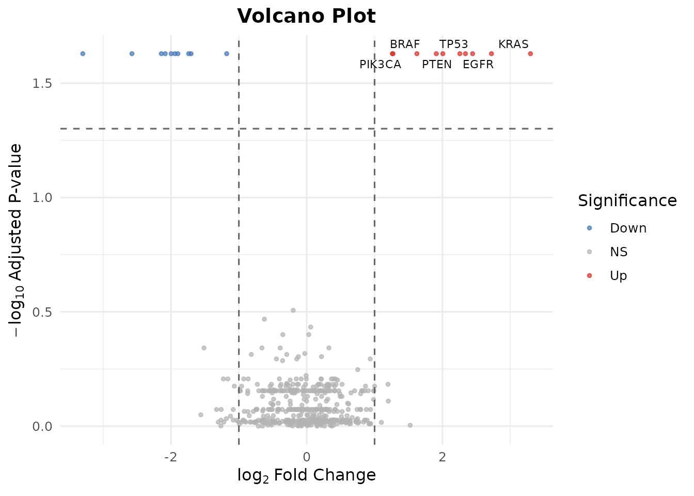
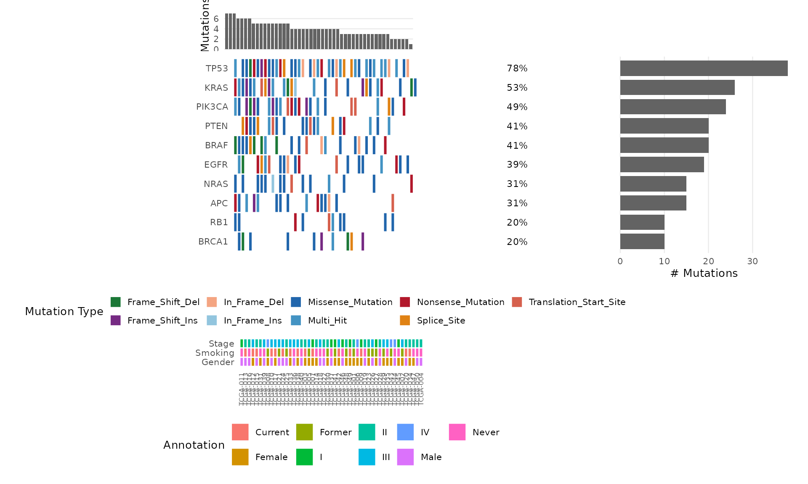

5-Minute Tutorial: RNA-Seq Analysis with bambamR
Source:vignettes/bambamR-tutorial.Rmd
bambamR-tutorial.Rmd
This tutorial walks through a complete RNA-seq analysis in under 5 minutes using only bambamR’s built-in example data. No Bioconductor packages are required.
1. Load Data and Normalize
# Bundled example: 200 genes x 10 samples (5 control, 5 treatment)
ex <- bb_example_counts()
cpm <- bb_normalize(ex$counts, method = "cpm")
cat(nrow(cpm), "genes,", ncol(cpm), "samples\n")
#> 200 genes, 10 samples2. PCA: Do the Groups Separate?
bb_pca(cpm, ex$metadata, color_by = "condition", label = TRUE)
3. Volcano Plot: What Changed?
Use the pre-computed DE results (no Bioconductor needed):
de <- bb_example_de()
bb_volcano(de, fc_cutoff = 1, p_cutoff = 0.05, n_label = 6)
#> Warning: Removed 494 rows containing missing values or values outside the scale range
#> (`geom_text_repel()`).

6. Oncoplot: Mutation Landscape
mut <- bb_example_mutations()
bb_oncoplot(mut$mutations, n_genes = 10, annotation_df = mut$clinical)
7. Export
bb_export_csv(de, "my_results.csv")Done!
In 7 steps you went from a count matrix to publication-ready PCA, volcano, MA, heatmap, and onco plots – all without Bioconductor.
What’s next?
- With Bioconductor:
bb_deseq2(),bb_edger(),bb_limma_voom()for real DE analysis - From raw data:
bb_pipeline()handles FASTQ -> alignment -> counts -> DE -> plots - Interactive:
bb_run_app()launches a Shiny dashboard - Customization: every plot returns a ggplot2 object, so add
+ theme(),+ labs(),+ scale_*()as needed - See
vignette("bambamR-quickstart")for the full walkthrough andvignette("bambamR-oncoplot")for oncoplot customization